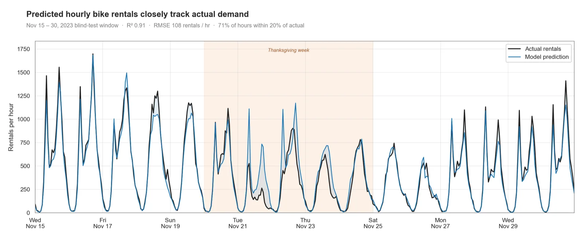
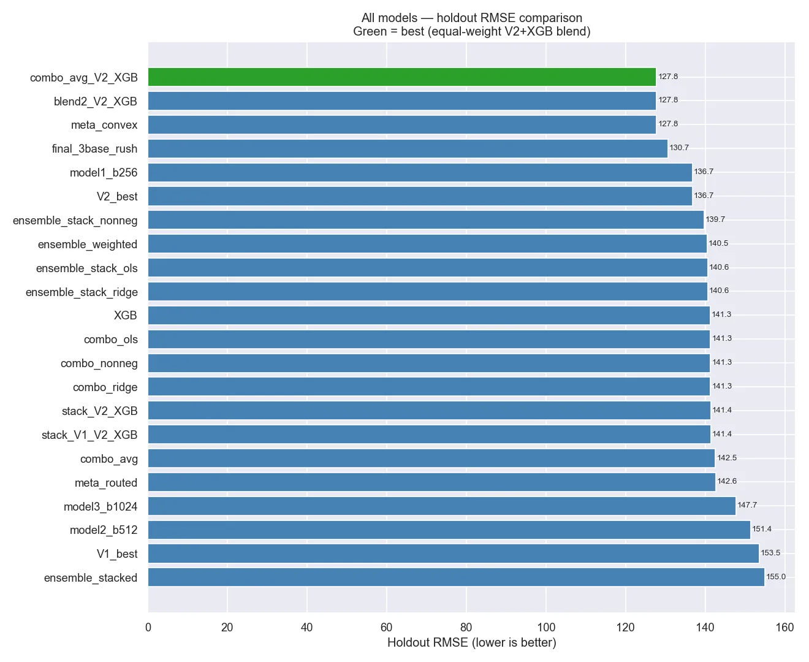
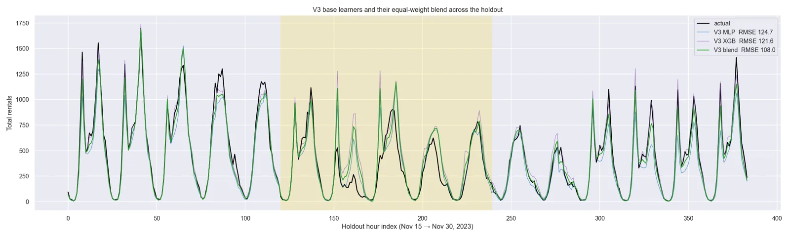
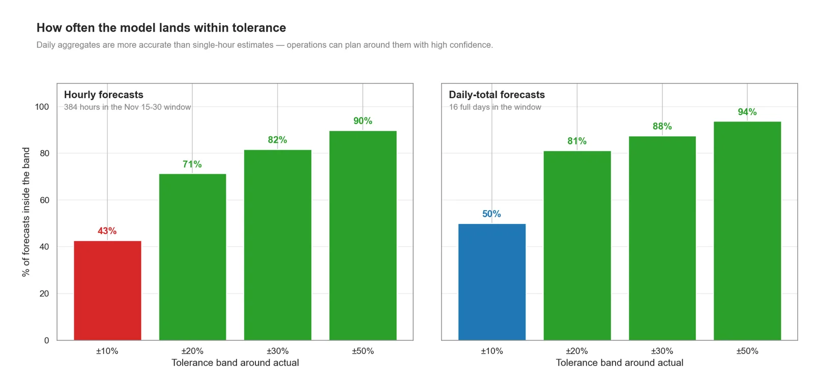

Two different model families, averaged and taught the holiday calendar, forecast every hour of a blind November window, including Thanksgiving week.
- RMSE
- 108.0rentals per hour on the blind window
- R²
- 0.912over 384 hours, Nov 15–30, 2023
- Hours within 20%
- 71%of actual rentals
- Days within 20%
- 81%of daily totals

The problem
A Washington, DC bike-share system needs to know how many bikes will be rented each hour so it can staff, rebalance and plan. The task was to predict total rentals (casual plus registered riders) for every hour of a blind test window. Submissions were scored on RMSE, MAE, R² and the share of hours within 5%, 10% and 20% of actual demand. Demand swings from near zero overnight to over 1,500 at rush hour, and holidays break the usual weekly rhythm.
The data
The training data has 112,475 hourly records from January 2011 through October 2023. Each record includes the hour, date, temperature, feels-like temperature, humidity, wind speed, a weather-severity code, season and holiday and working-day flags. Casual and registered rentals are given separately. The mini holdout covers 384 hours from November 15 to November 30, 2023, which falls after all the training data and includes Thanksgiving week. It is a genuine out-of-time test.
Our approach
We built features in three rounds. V1 encoded time cyclically (sine and cosine of the hour and season), added a long-run time trend and a combined weather-intensity score. V2 added day-of-week cycles and hour × working-day interactions, and trained on log-scaled targets. V3 added holiday awareness from the US/DC holiday calendar: day before and after a holiday, bridge days, days to the next holiday and hour × holiday-week interactions.
On each feature set we trained a Keras MLP (Swish activations, batch norm, dropout, Huber loss, two outputs for casual and registered riders) and a pair of XGBoost regressors. We scored 22 variants (single models, weighted ensembles, linear and ridge stacks, an hour-routed meta-learner and a rush-hour specialist). A plain equal-weight average of the MLP and XGBoost matched or beat every learned stacker. All training ran on CPU.

Results
The V3 holiday-aware blend reached an RMSE of 108.0 rentals per hour and an R² of 0.912 on the blind window, down from 127.8 for the same blend without holiday features. Neither half was as good alone.
| Model | RMSE | R² |
|---|---|---|
| V2 MLP alone | 136.7 | — |
| V2 XGBoost alone | 141.3 | — |
| Best linear stacker (3 V2 MLPs, non-negative) | 139.7 | — |
| V2 MLP + XGBoost, equal average | 127.8 | 0.877 |
| V3 MLP alone (holiday-aware) | 124.7 | — |
| V3 XGBoost alone (holiday-aware) | 121.6 | — |
| V3 MLP + XGBoost, equal average | 108.0 | 0.912 |

Daily totals were more reliable than single hours: 81% of days landed within 20%.

What we learned
The biggest gain came from understanding the calendar, not from a more complex model. The V2 models overpredicted Thanksgiving week because they treated it like a normal working week, and holiday-proximity features cut much of that error (overall RMSE 127.8 → 108.0), though Thanksgiving week is still where the largest misses fall.
Simple averaging matched or beat every learned stacker we tried. The stackers were fit on a random internal split, which may not reflect an out-of-time window. Combining two different model families helped more than tuning either one: the V2 MLP and XGBoost errors correlated at only 0.74, which left room for the average to help. Next time we would validate with a time-based split from the start, so internal scores reflect forecasting rather than interpolation.
Team, tools and code
Team NorthWind
- Caleb Dilley
- Dallin Wagner
- Jonathan Oliphant
- Nels Buhrley
A team project for CSE 450 Machine Learning at BYU-Idaho, Spring 2026.
Source: Source on GitHub · Team project site